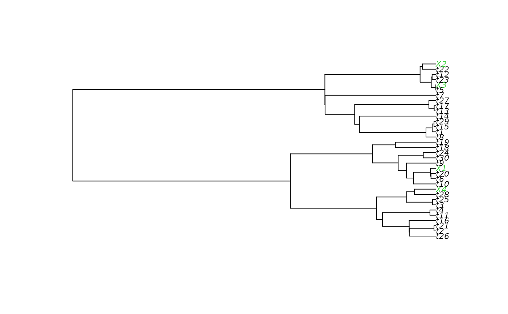
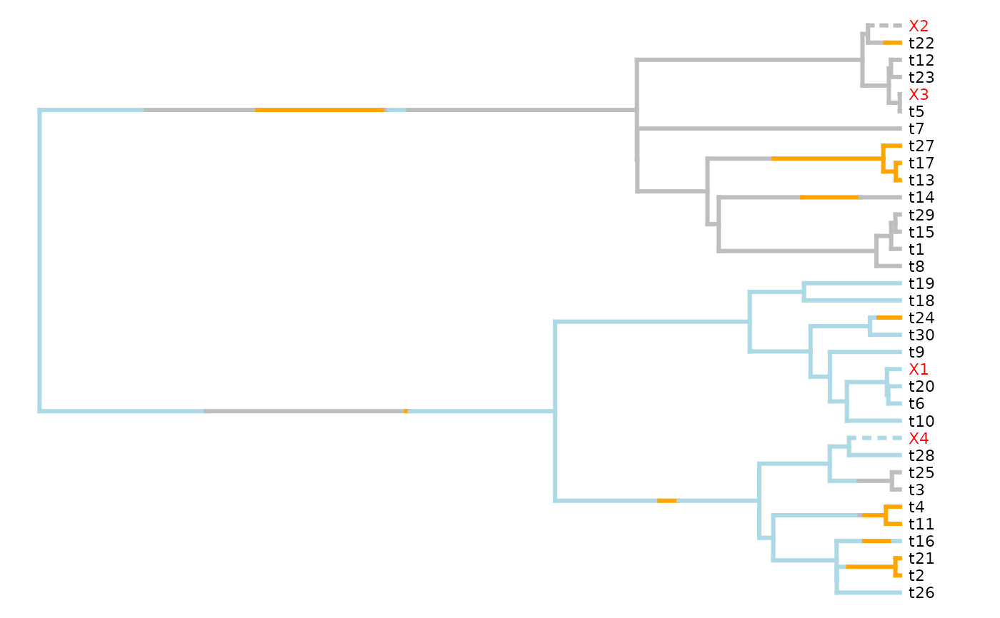
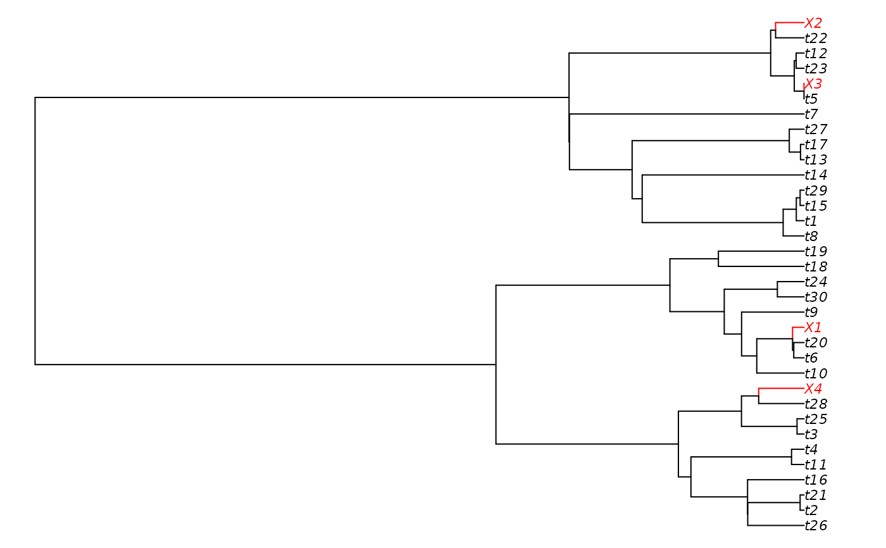
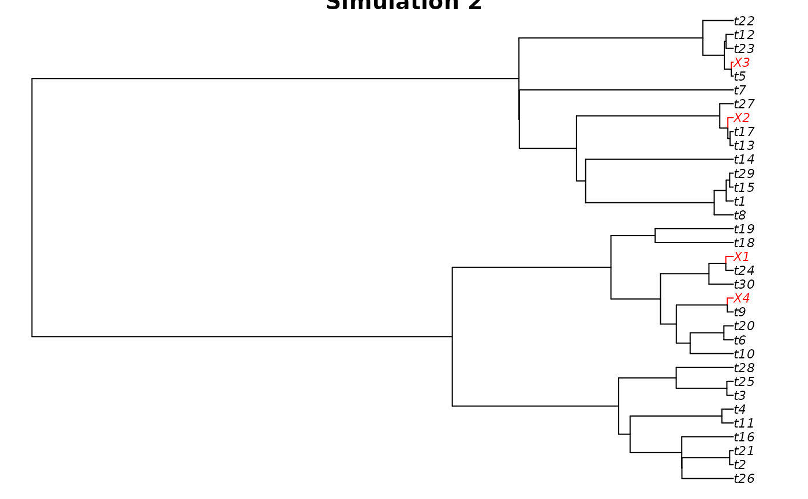

Plot a phylogeny returned by the grafting functions, with the grafted branches and/or the grafted tips highlighted.
If the phylogeny has a $simmap (grafting with a simmap), the updated stochastic character map is plotted instead of the plain phylogeny:
the colors of the states are kept, the grafted branches are drawn dashed lines, and the grafted tips are labelled with the highlight color.
The function uses the plotting functions of ape and phytools (plot.phylo(), phytools::plotSimmap() and ape::tiplabels()):
it only prepares the colors and the dashes, and other plotting arguments are passed to these functions.
Usage
plot_grafted(
phy_grafted,
which = c("both", "edges", "tips"),
color = "red",
use_simmap = TRUE,
simmap_colors = NULL,
index = 1,
trait = 1,
...
)Arguments
- phy_grafted
A grafted phylogeny (class
"phylo", with the elements$grafted_tipsand$grafted_edges, seephylograftR::identify_grafted()), a set of grafted phylogenies (class"multiPhylo", e.g., several simulations), or a list of them with one element per map (output of the grafting functions with a"multiSimmap"). Only one phylogeny is plotted: seeindex.- which
Character string. What to highlight:
"both"(default) for the grafted branches and tips,"edges"for the grafted branches only, or"tips"for the grafted tips only.- color
Character string. Color used to highlight the grafted elements. Default is
"red". For a plain phylogeny, the grafted branches and the grafted tip labels are drawn in this color. For a simmap, the branches keep the colors of their states and the grafted tip labels are drawn in this color.- use_simmap
Logical. If
TRUE(default) and the phylogeny has a$simmap, plot the updated simmap instead of the plain phylogeny. If there is no$simmap, the plain phylogeny is plotted.- simmap_colors
Named character vector. Colors of the states of the simmap: the names are the states. If
NULL(default), the current default palette is used. Only used if the simmap is plotted.- index
Integer. Position of the phylogeny to plot among the phylogenies of
phy_grafted. Default is1. For a"multiPhylo", it is the position of the simulation. For a list of maps, the phylogenies of the first map come first, then those of the second map, etc.- trait
Integer or character string. The trait to plot when the phylogeny has the simmaps of several traits (position or name of the trait). Default is
1. Ignored with a single trait.- ...
Other arguments passed to
plot()(seeape::plot.phylo()) for a plain phylogeny, or tophytools::plotSimmap()for a simmap (e.g.,cex,show.tip.label,edge.widthfor the plain phylogeny;fsize,ftype,lwdfor the simmap). A title can be added withmain(andsub).
Details
Plain phylogeny
The grafted branches (which = "edges" or "both") and the labels of the grafted tips (which = "tips" or "both") are drawn in color, the rest in black.
This is the equivalent of passing edge.color and tip.color to plot(), which can still be overridden through ....
Simmap
A branch of a simmap is drawn in the color of its state, so the grafted branches cannot be highlighted by a color without hiding their state.
They are drawn as dashed lines instead, with which = "edges" or "both".
The labels of the grafted tips, with which = "tips" or "both", are drawn in color.
Only rightwards phylograms (direction = "rightwards") are supported for simmaps.
See also
Other functions from phylograftR:
phylograftR::graft_missing_taxa()to graft taxa based on target clades and excluded subclades.phylograftR::graft_missing_clades()to graft groups of missing taxa as sister clades of backbone clades.phylograftR::graft_missing_taxa_and_clades()to graft missing taxa and missing clades in one run, with a single set of inputs.phylograftR::identify_grafted()to identify the grafted tips and branches of a phylogeny.
Examples
# --- Prepare data --- #
# Create a toy backbone phylogeny: ultrametric, with a root age of 50 time units
set.seed(1234)
phy <- ape::rcoal(n = 30)
phy$edge.length <- phy$edge.length / max(ape::node.depth.edgelength(phy)) * 50
# List the missing taxa to graft
missing_taxa_list <- list(
Taxon_name = c("X1", "X2", "X3", "X4"),
Target_clade = list(X1 = c("t26", "t18"), X2 = c("t8", "t22"), X3 = "t5", X4 = c("t26", "t18")))
# --- Plot a grafted phylogeny --- #
grafted_phy <- graft_missing_taxa(phy = phy, missing_taxa_list = missing_taxa_list,
verbose = FALSE, seed = 1234)
# Grafted branches and tips are highlighted in red
plot_grafted(grafted_phy, cex = 0.7)
 # Highlight only the tips, in green
plot_grafted(grafted_phy, which = "tips", color = "limegreen", cex = 0.7)
# Highlight only the tips, in green
plot_grafted(grafted_phy, which = "tips", color = "limegreen", cex = 0.7)

# --- Plot a grafted phylogeny with its simmap --- #
# Simulate a simmap with three states on the backbone
Q <- matrix(0.04, 3, 3, dimnames = list(c("A", "B", "C"), c("A", "B", "C")))
diag(Q) <- -0.08
simmap <- phytools::sim.history(phy, Q, anc = "A", message = FALSE)
# Graft the taxa, updating the simmap
grafted_phy_states <- graft_missing_taxa(phy = phy, missing_taxa_list = missing_taxa_list,
simmap = simmap, verbose = FALSE, seed = 1234)
# The simmap is plotted: grafted branches are dashed, grafted tips are labelled in red
plot_grafted(grafted_phy_states, simmap_colors = c(A = "lightblue", B = "orange", C = "grey"),
fsize = 0.7, lwd = 3)

# Plot the phylogeny without its simmap
plot_grafted(grafted_phy_states, use_simmap = FALSE, cex = 0.7)

# --- Plot one of several simulations --- #
grafted_phys <- graft_missing_taxa(phy = phy, missing_taxa_list = missing_taxa_list,
nb_simulations = 3, verbose = FALSE, seed = 1234)
plot_grafted(grafted_phys, index = 2, cex = 0.7, main = "Simulation 2")
